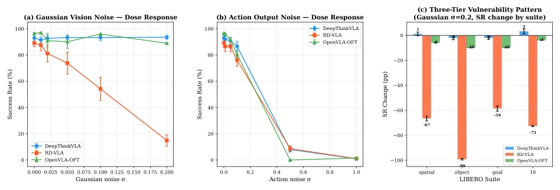
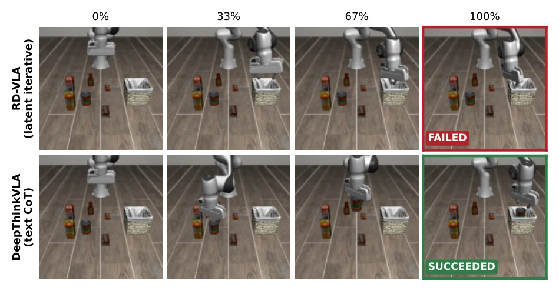
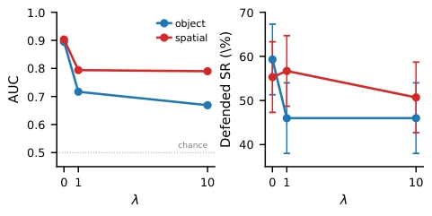
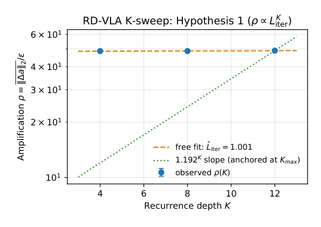
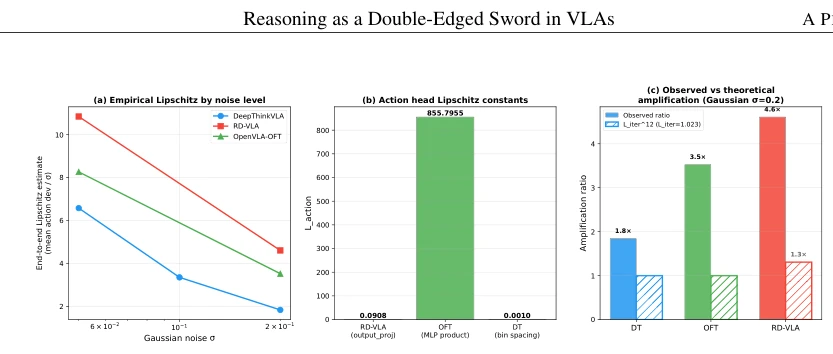
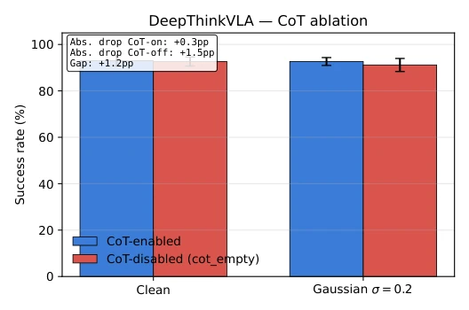

This paper poured cold water on the "reasoning enhancement" of VLAs. Intuitively, thinking before acting should be more robust, but the authors' empirical findings reveal that introducing implicit iterative reasoning (RD-VLA) instead became the most fragile link, collapsing at the first hit of noise. Although text CoT is readable, under adaptive attacks the detection rate dropped directly to random levels. This research is like equipping a robot with a "brain", only to find the brain gets dizzy more easily than the cerebellum. The highlight lies in decomposing the robustness of the reasoning architecture to the stage level, popping the bubble of "reasoning equals safety". The drawback is that only simulation was tested, and the conclusion is somewhat pessimistic, offering no specific plan on how to fix RD-VLA, only stating "this is a ceiling". However, falsifying the K-sweep and Lipschitz assumption is still valuable "mine-clearing" work.
Existing VLA robustness benchmarks [7] mostly treat models as black boxes, failing to isolate reasoning steps, leading to an inability to judge whether perturbations are absorbed or amplified. Intuition suggests "think first, act later" should be more robust, but lacks empirical evidence. Existing work such as TRAP [41] only focuses on text CoT hijacking, failing to cover implicit reasoning or cross-stage attacks. This paper aims to answer: Does reasoning design alter the robustness distribution? Can reasoning outputs serve as runtime safety signals? This concerns the safety of embodied intelligence deployment; if the reasoning module itself is an amplifier rather than a filter, blindly stacking complexity will only increase risks.
The study constructed a cross-stage attack matrix, testing three VLAs on LIBERO and SimplerEnv: reasoning-free OpenVLA-OFT [2], text CoT DeepThinkVLA [5], and implicit iterative RD-VLA [6]. Perturbation injection points cover the visual, reasoning, and action three stages, employing Gaussian noise and white-box PGD-10 [9]. The core innovation lies in the K-sweep experiment, verifying whether the amplification effect is structural or cumulative by changing the reasoning depth K of RD-VLA. Additionally, "plan-action consistency" probes and action anomaly probes were designed to evaluate defense upper bounds under matched FPR. In terms of data flow, all downstream metrics depend on perturbed latent representations to ensure fair comparison.
实验Experiments
在 LIBERO 4 个套件上测试，指标为任务成功率 (SR)。结果显示 RD-VLA 在高斯噪声下 SR 暴跌至 14.8%，而 DT 和 OFT 保持高位。PGD-10 攻击下 RD-VLA 归零。K-sweep 证明放大效应与深度 K 无关，属结构特性。一致性探针在自适应攻击下 AUC 降至 0.493（随机水平），融合
Tested on 4 suites of LIBERO, with the metric being task success rate (SR). Results show RD-VLA's SR plummeted to 14.8% under Gaussian noise, while DT and OFT remained high. Under PGD-10 attacks, RD-VLA dropped to zero. K-sweep proves the amplification effect is unrelated to depth K, belonging to structural properties. The consistency probe's AUC dropped to 0.493 (random level) under adaptive attacks, fusion
其他图片Other Figures

Figure 2: Cross-stage vulnerability profile. (a) Gaussian vision noise dose-response: DT and OFT withstand, RD-VLA collapses. (b) Action-stage Gaussian noise produces a sharp cliff between σ=0.1 and σ=0.5 on all three models. (c) Two-tier Gaussian vulnerability at σ=0.2 (∆SR by suite): RD-VLA collapses (−74.3pp) while DT (−0.3pp) and OFT (−7.5pp) are inconclusive at N=12 (p=0.30). Error bars ±1 SE. The FGSM dose-response is in App. A; the PGD-10 row, which separates DT from OFT, is in Table 2.

Figure 3: The σ=0.2 collapse, in rollouts. Representative episodes under Gaussian sensor noise (σ=0.2) on a libero_object task (“pick up the tomato sauce and place it in the basket”), sampled at even fractions (0%–100%) of each rollout from an identical start state. The latent-iterative RD-VLA (top) leaves the object untouched and fails, while the text-CoT DeepThinkVLA (bottom) completes the pick-and-place and succeeds, the per-episode face of the aggregate gap (14.8% vs. 92.7% SR, N=12; Table 2). These are single illustrative episodes; the quantitative claims rest on the N=12 aggregates. Full rollouts are in the supplementary video.

Figure 4: Stage-fused guard (α=0.5) under checker-aware adaptive PGD-10 (ε=8/255). As the action-anomaly penalty weight λ increases, both detection AUC (left) and defended SR (right) drop on libero_object and libero_spatial. Numerical values: App. D.

Figure 5: RD-VLA K-sweep at ε=8/255 (N=12 per K). Observed amplification ρ(K) is statistically flat (slope gives ˆLiter=1.0007, free-intercept fit), inconsistent with the back-solved Liter=1.192 prediction (dotted line, anchored at K=12). The data positively identify a K-invariant ∼49× structural amplification rather than per-iteration compounding. K=4 is out-of-distribution for this model (clean SR 72.8% vs. 89% at training K=12); the multiplicative-per- iteration form is ruled out by the in-distribution K∈{8, 12} comparison alone.

Figure 7: Perturbation amplification analysis. Left: per-stage spectral norms—RD-VLA’s output projection is a contraction (σ1=0.091); amplification occurs upstream in recurrent layers. Center: end-to-end amplification at σ=0.2. Right: the K-sweep test at K∈{4, 8, 12} (Figure 5, Table 3) finds ρ(K) statistically flat (ˆLiter≈1.0): the architectural ∼49× amplification is positively identified as K-invariant and structural (encoder + fixed-point recurrence output). The back-solved ˆLiter ≈1.192 (from the observed K=12 ratio LRD-VLA reasoning/LOFT reasoning ≈8.22) implies a multiplicative-per- iteration form that the K-sweep rules out.

Figure 8: CoT-disabled ablation on DeepThinkVLA (N=12 suite/seed pairs). Bars show mean SR (±SE) under clean and Gaussian σ=0.2 conditions. CoT-enabled drops 0.3 pp under noise; CoT-disabled drops 1.5 pp (gap +1.2 pp; Shapiro-selected Wilcoxon p=0.59, paired t p=0.35, both non-significant; d=0.28). Clean SR is indistinguishable (p=0.81). Results indicate backbone-driven robustness, not CoT-driven denoising.